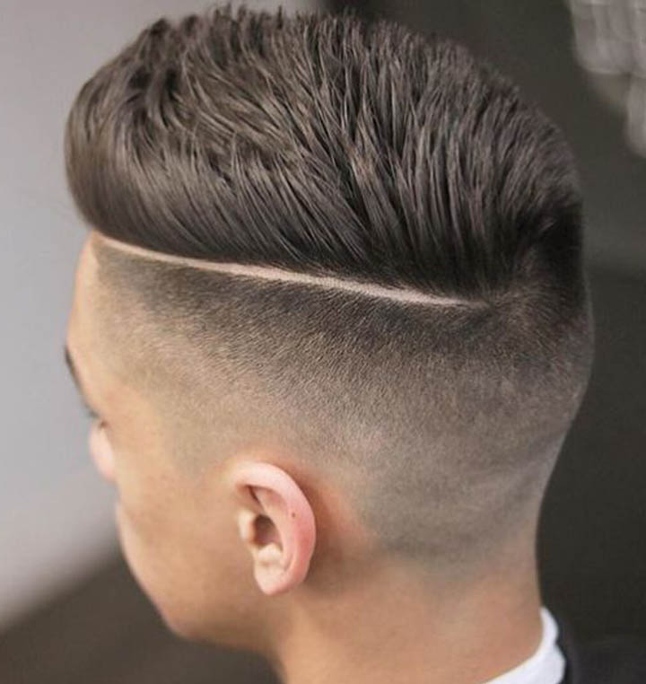

Андеркат (UnderCut)– это, несомненно, одна из самых модных стрижек уже который сезон подряд. Характерный признак этой причёски – сочетание коротко стриженных или выбритых висков, и длинных прядей на макушке и затылке, причём граница между этими длинами чётко обозначена. Такую популярность стрижка обрела благодаря своей универсальности и многочисленным вариантам как самой стрижки, так и укладок. Например, в этом случае длинные волосы на макушке отделены чётким пробором и зачёсаны набок.
2. Стильный Квифф
Квифф – модная современная причёска, которая включает в себя элементы индейского ирокеза, и так называемой чёлки Помпадур, или кока. Это стрижка с выбритыми или коротко остриженными висками, длинной чёлкой и макушкой, которая постепенно укорачивается по направлению к затылку. Такая причёска отлично смотрится на тонких волосах, неприхотлива в уходе и считается любимой стрижкой школьников и студентов.
3. Шокирующий «Искусственный Ястреб»
Это одна из тех мужских стрижек, которые возникли под влиянием смешения нескольких стилей. Она напоминает нам о блистательном Элвисе из 70-х и о динамичном Моррисси из 80-х. Волосы стригутся слоями под углом: от полностью бритой нижней части затылка до длинной макушки, которая укладывается в остроконечный хохол, напоминающий голову ястреба с грозным клювом. При чём без стайлинговых средств здесь не обойтись, на этапе формирования «ястреба» лучше использовать пенку или гель, а зафиксировать причёску лучше лаком сильной фиксации.
4. Чёлка Помпадур с Бликами
Причёска с чёлкой Помпадур – это современная интерпретация пышных париков 17-го века. В 70-х годах она стала популярной благодаря королю рок-н-рола Элвису Пресли, ну а в 80-х высокие объёмные причёски и начёс стали ультрамодными и у мужчин, и у женщин. Мода циклична, и сегодня снова чёлки помпадур занимают первые места по популярности. В современном виде она великолепно смотрится со светлыми бликами в тёмно-русых волосах, что даёт дополнительный объём и вносит модный штрих в привычный образ.
5. Ястреб с Шипами
Знаменитости и их стиль являются лучшим источником вдохновения для всех популярных причёсок. Эта стрижка, несомненно, была позаимствована у Джима Керри в 90-е. Волосы стригутся коротко по бокам, в то время как центральная часть от лба к затылку остаётся длинной. Для укладки возьмите немного геля или мусса, пальцами сформируйте шипы, для выделения кончиков можете воспользоваться воском для волос. Яркий и экстравагантный образ вам обеспечен.
6. Стрижка с Выбритыми Узорами
Современные мужские причёски становятся всё более творческими и дизайнерскими. Если вы молоды и энергичны, и постоянно в поисках чего-то нового, вам стоит обратить внимание на выбритые узоры и геометрические фигуры на волосах. Такая арт-стрижка очень популярна, она подчеркнёт ваш персональный стиль и освежит любую причёску. Просто попросите своего мастера выбрить с помощью триммера «татуировку», и она отлично дополнит ваш образ активного и креативного парня.
7. Бритые Виски
Вы – обладатель овальной или продолговатой формы лица? Тогда вам нужно избегать дополнительного объёма на макушке. Поэтому, в стрижке с обритыми боками и длинной макушкой, не нужно приподнимать и зачёсывать чёлку вверх, имитируя причёску помпадур, достаточно просто нанести на чёлку немного геля и зачесать её в сторону. Такая причёска особенно подходит светловолосым мужчинам и выгодно подчеркнёт их романтичный образ.
8. Ультракороткая Стрижка
В отличие от женских стилистов, мужские редко принимают во внимание форму лица. Поэтому, сделав модную стрижку, может оказаться, что она вас полнит, или выставляет черты лица в невыгодном свете. Особенно это касается мужчин с круглой формой лица, которая при неправильной стрижке упрощает образ своего обладателя. Чтобы избежать этого, выбирайте ультракороткий ёжик с узкой прямой фронтальной линией волос. Дополните образ короткой бородкой, которая придаст определённую нотку брутальности.
9. Хипстерский Стиль
Эффектный и очень стильный образ. Коротко выбритые виски и затылок открывают лицо, теменная часть остаётся длинной. Все пряди должны быть приблизительно одинаковой длины не менее 10 см, чтобы вам было удобно собирать волосы в хвостик, если вы захотите сменить имидж. Для укладки нанесите немного пенки или геля на волосы, начешите у корней и уложите чёлку назад. Для придания причёске объёма, а также для шикарного и экстравагантного вида добавьте светлые блики в ваш повседневный образ.

10. Градуировка
Стрижка «лесенкой» пришла к нам из 90-х, и поныне пользуется большой популярностью. Волосы стригутся слоями, без резких переходов, чёлка остригается ровно, и укладывается слегка набок. Такая стрижка отлично смотрится на волнистых волосах, подчеркнёт вашу индивидуальность и сделает образ уникальным. Чтобы сделать классический образ более современным, добавьте аккуратную бороду и тонкие усы.
11. Милитари
«Военный» стиль. Подходит молодым людям с квадратной головой, грубыми чертами лица, крепким телосложением. Не требует обязательного сложного ухода, поэтому очень популярна среди мужчин. Такая стрижка подчеркнёт вашу мужественность, силу характера и уверенность в себе. Ультракороткая стрижка с острыми и чёткими геометрическими линиями красиво обрамляет лицо, она достаточно лёгкая в уходе и не требует ежедневной укладки, особенно она подойдёт динамичному мужчине, живущему активной и насыщенной жизнью. Лёгкая щетина дополнит образ сильного и серьёзного лидера. Особенно выигрышно смотрится на прямых жёстких волосах.
12. Канадка
Виски выбриваются полностью, длина на макушке от 3 см. Хорошо смотрится на любом типе волос. Повезло обладателям вьющихся, так как облегчается процесс укладки. Эта стрижка стала настоящей классикой и получила огромное признание, потому что она достаточна проста, но в то же время способна создать образ уверенного в себе молодого человека. Станет идеальным вариантом для спортсменов, так как не требует обязательной укладки. С канадкой на голове мужчина может позволить себе любой образ: от респектабельного бизнесмена и рафинированного денди до брутального хулигана. Всё зависит от характера укладки волос.
13. Ирокез
Мужская стрижка ирокез наполнена отвагой и бунтарским духом, может иметь достаточно воинственный вид и в любом случае не оставит носителя своего без внимания окружающих. На сегодняшний день ирокез уже не является диковинкой для общества, а отдельные его варианты даже приобрели достаточно широкую популярность. Шевелюра на макушке должна быть длинная, чтобы из волос можно было соорудить настоящий ирокез. Помогут в этом разные укладочные муссы и гели. Такую прическу выбирают только смелые и решительные парни.
14. Цезарь
Цезарь не просто стрижка, а стрижка с легендой. Первым носителем ее, в честь которого собственно и названа, был великий Гай Юлий Цезарь. Данный полководец с годами стал лысеть. А что может лучше скрыть подобные проявления как ни укороченный затылок, немного удлиненная макушка и короткая прямая челка на лоб. Ходят поверья, что стрижка цезарь помимо отличного вида дарит своему обладателю ясность мыслей, разум и рассудительность. Стрижка цезарь далеко не уникальна и на сегодняшний день не занимает вершины популярности. Но это совсем не повод упускать ее из виду. Многие, в том числе и знаменитые личности, отдают ей предпочтение. Такая стрижка несомненно придаст своему обладателю прилежный вид и будет выглядеть стильно, а главное неизбито. Единственный минус цезаря постоянная укладка, в особенности это касается непослушных волос. Зато масса вариантов и видов. Верхнюю удлиненную часть можно улаживать по-разному на свое усмотрение, тем самым постоянно меняя имидж.
15. Гитлерюгенд
Мужская стрижка гитлерюгенд несмотря на столь вызывающие название пользуется отменной популярностью среди мужчин любого возраста. Аккуратность, строгость, сдержанность – основные определения, характеризующие ее. Гитлерюгенд стрижка способная дополнить любой образ. Она отлично подойдет как серьезным, деловым парням в галстуках, так и неординарным татуированным личностям, с глубоким творческим потенциалом.